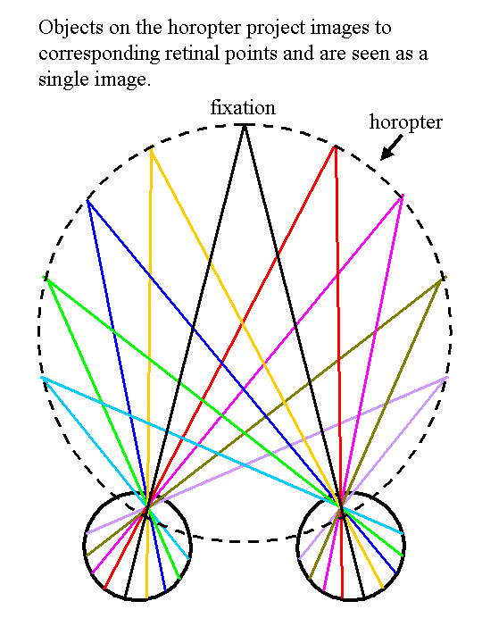
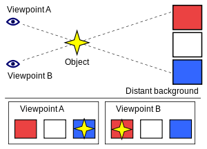
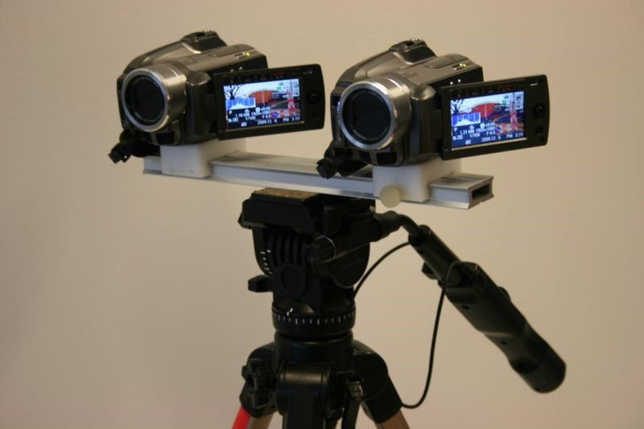
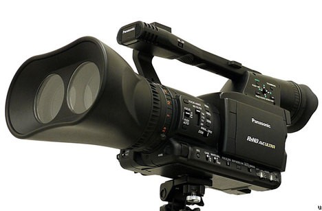
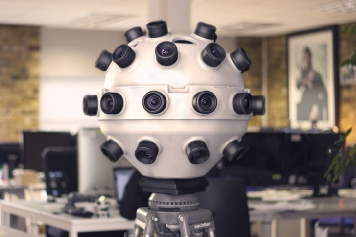

La stéréoscopie est l’ensemble des techniques mises en œuvre pour reproduire une perception du relief à partir de deux images planes mises côtes à côtes. Il s’agit d’onc du principe de base derrière la réalité virtuelle pour téléphones intelligents. Toutefois, avant de débuter, il est primordial de d’abord se familiariser avec le fonctionnement de l’œil humain, car la technologie du VR se base grandement sur son fonctionnement et, jusqu’à un certain point, tente de l’imiter.
2.1 Stéréopsie
La distance horizontale moyenne entre les yeux d’un être humain est d’environ 6 cm, ce qui cause une légère variation entre l’image qui est perçue par chaque œil. La troisième dimension, soit la profondeur, apparait lorsque les deux images perçues sont analysées et superposées par le cerveau. Il s’agit de la fusion sensorielle.
2.2 Horoptère
Un principe de base à la vision binoculaire est l’horoptère. Il s’agit de L’ensemble des points de l’espace vus simples lorsque l’on fixe un point. Un point vu simple est un point qui est perçu exactement de la même façon par chaque œil, celui-ci n’aura donc pas de profondeur lorsque l’image perçue par chaque œil sera fusionnée. Donc, tout ce qui se trouve à l’intérieur de l’horoptère possède une profondeur, et tout ce qui se trouve sur l’horoptère n’en possède pas.

2.3 Parallaxe
Il s’agit de la différence entre les positions apparentes d’un objet vu à partir de deux différents champs de vision. En regardant un objet à partir du point de vue A, il semble être directement devant le cube bleu, mais en regardant ce même objet du point de vu B, il semble être devant le cube rouge.

Dans le monde du 3D, le terme réfère plus couramment à la séparation entre l’image de chacun des deux côtés d’un axe horizontal sur un écran. À l’aide d’un casque VR, l’écran sera regardé simultanément de deux points de vue différents, un par chaque œil, reproduisant artificiellement le principe de vision binoculaire. L’œil gauche regarde donc uniquement la partie gauche de l’écran, et l’œil droit la partie droite. Puisque chaque côté de l’écran montre une image d’un point de vue quelque peu différent, et avec l’aide de lentilles convexes (voir section 3) une profondeur artificielle est créé.
2.4 Caméras
Afin d’obtenir une vidéo stéréoscopique, il faut utiliser des caméras spécialisées. Il en existe de nombreux modèles et variations. Les plus simples consistent de deux caméras normales fixés sur un axe vertical.

D’autres sont spécialement faites afin de fournir une expérience 3D de qualité. Ce type de caméras est surtout utilisé dans le monde du cinéma.

Et puis, il y a les caméras pour la réalité virtuelle de 360 degrés.

Toutefois, le principe derrière l’effet de profondeur avec une telle caméra est quelque peu différent. Ce qui est filmé simultanément par toutes les caméras sera réuni en une seule immense vidéo sphérique qui ne possède pas de troisième axe. Les vidéos 360 degrés ne possèdent donc pas réellement de profondeur, mais puisque la vidéo sphérique est visionnée à l’aide d’un casque VR, nous avons l’impression qu’elle en possède une.
Cependant, ce principe ne s’applique pas pour ce qui est d’un environnement 3D, car il ne s’agit pas d’une vidéo déjà filmée et qui est ensuite modifiée, mais bien d’une caméra qui “filme” un univers 3D en direct. Unity utilise le principe des deux caméras côte à côte, il y a donc un effet de profondeur réel.